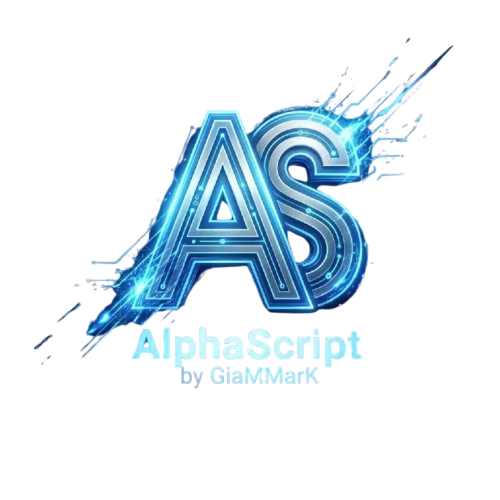

Siti web
Siti per attività e progetti personali, pagine di presentazione e restyling. Contenuti chiari, navigazione semplice e attenzione a chi usa il telefono.
Sviluppo indipendente · Web & gaming
Sono GiaMMarK. Progetto interfacce e scrivo il codice che le fa funzionare. Posso partire da zero oppure rimettere mano a quello che hai già.
alphascript24@gmail.com
Cosa faccio
Un sito nuovo, una funzione da aggiungere o un problema da risolvere. Partiamo da quello che ti serve.
Siti per attività e progetti personali, pagine di presentazione e restyling. Contenuti chiari, navigazione semplice e attenzione a chi usa il telefono.
Dashboard, strumenti di gestione e collegamenti tra servizi. Dall’interfaccia alle funzioni che lavorano sui dati.
Script Lua, NUI e risorse per server FiveM. Interfacce, configurazioni e debug, tenendo conto del framework che stai già usando.
Se qualcosa non funziona o è diventato difficile da usare, guardiamo il codice e decidiamo dove intervenire. Anche una modifica circoscritta può bastare.
Chi sono
Seguo la parte visiva e lo sviluppo. Mi interessa capire come userai il progetto, prima di scegliere come costruirlo.
Se hai già file, schermate o un sito da rivedere, partiamo da lì. Ti spiego cosa propongo di cambiare e cosa serve per farlo.
ParliamoneGli strumenti con cui lavoro
La scelta dipende dal progetto.
Non serve usare tutto, ogni volta.
Obiettivo, materiali disponibili e cose da evitare. Anche una prima idea va bene.
Una prima versione da provare e rivedere, senza aspettare di avere tutto finito.
Codice, verifiche e indicazioni per usare e aggiornare quello che abbiamo realizzato.
Da dove partire
Sono esempi di interventi possibili, non case study di clienti.
Rivediamo gli spazi, il menu e i moduli. Il punto è rendere il sito comodo da usare, non soltanto più bello.
Ho un sito da rivedereGuardiamo il flusso, eliminiamo i passaggi superflui e colleghiamo gli strumenti che già usi.
Parliamo del flussoPartiamo dai log, dalle configurazioni e dal framework. Cerchiamo la causa prima di aggiungere altro codice.
Ti spiego il problemaDue cose prima di iniziare
Sì. Posso rivedere la grafica, sistemare il layout su telefono o aggiungere una funzione. Prima guardiamo come è costruito e cosa vuoi mantenere.
Sì: Lua, NUI, configurazioni e debug di risorse esistenti. Indicami il framework e, se c’è un errore, allega o descrivi il log nel primo contatto.
Bastano una descrizione di quello che vuoi fare e gli eventuali link. Se hai una scadenza, file o schermate, dimmelo: li guarderemo insieme.
Dopo aver capito la richiesta, definiamo funzionalità, materiali e consegna. Se il lavoro cambia durante lo sviluppo, ne parliamo prima di procedere.
Scrivimi
Raccontami cosa vuoi realizzare o cosa non funziona. Non serve avere già un documento tecnico.
alphascript24@gmail.comPreferisci la tua app di posta?
Puoi usare direttamente il link qui sopra.